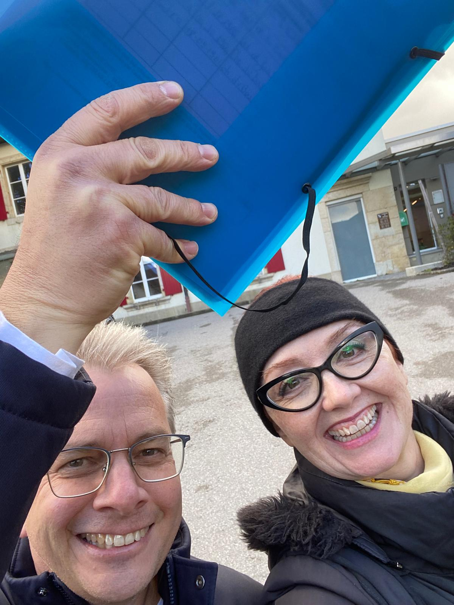

18 novembre 2026 · Message du comité
Les signatures ont été remises à la commune !
✅ C'est fait : toutes vos signatures ont été remises ce matin à la commune. Le nombre requis a été largement dépassé !
Contrairement à ce qu'a laissé entendre la commune, ce ne sont pas quelques voisins excédés par le bruit du chantier, mais bien des centaines de personnes qui demandent à être consultées.
Un immense MERCI à vous toutes et tous.
⚖️ Un investissement de 10 millions ? Grâce à vous, la décision finale revient maintenant au peuple.

Remise des signatures, le 18 novembre 2026.👉 Pour la 2e phase, nous cherchons des ambassadeurs. Leur rôle :
- participer à une séance d'information et poser leurs questions ;
- recevoir une documentation complémentaire ;
- étudier ensemble les autres options possibles ;
- inciter leur entourage à voter NON.
Vous êtes partant·e ? Écrivez-nous à referendumpenthaz@gmail.com, sur nos réseaux sociaux ou via le formulaire ci-dessous.